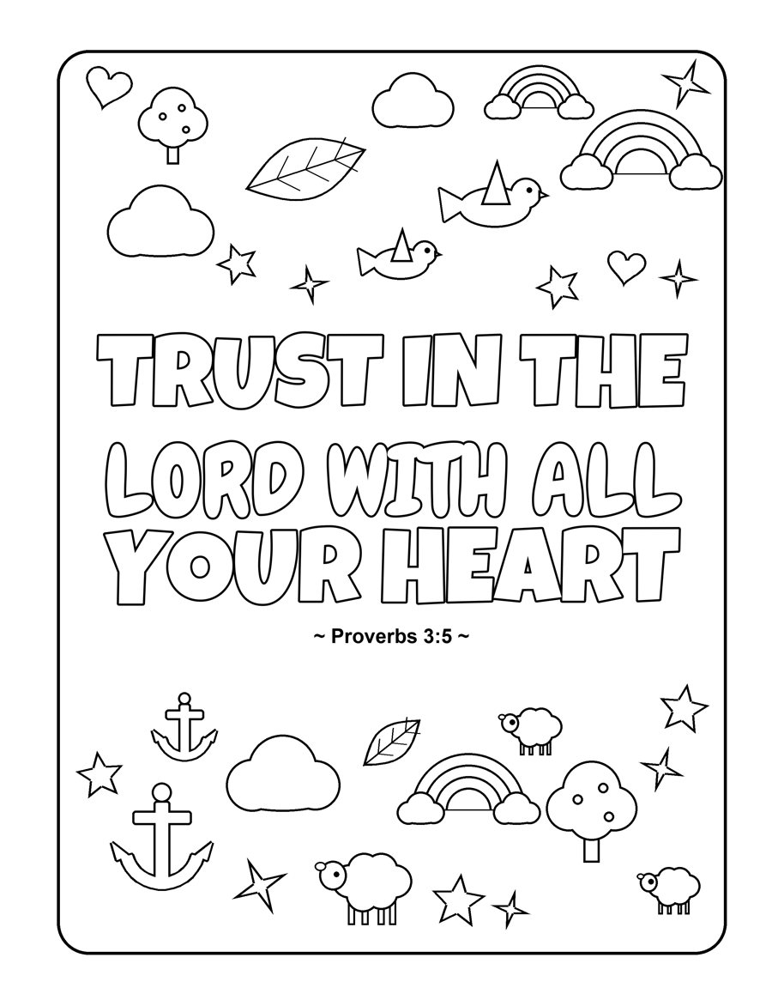

Proverbs 3:5 Bible Verse Coloring Page for Girls (Free Printable)
“Trust in the LORD with all your heart”Proverbs 3:5 (WEB)
A free printable Bible verse coloring page for girls ages 8-13, with big bold letters and cute trust drawings to color. Print it at home, in Sunday school or at church, and let God's Word come alive in color.
Prints in black and white. Free for personal, home, church and classroom use.
📖 This page is 1 of 40 in our printed coloring book. See the paperback on Amazon →

Memory Verse Challenge
- Read Proverbs 3:5 out loud together.
- Color the page while you think about what it means.
- Say it from memory by Sunday, and hide God's Word in your heart!
Talk about it: What worry can you hand over to God today? Write it down and pray about it together.

 Nehemiah 8:10“the joy of the LORD is your strength”
Nehemiah 8:10“the joy of the LORD is your strength” Matthew 6:28“Consider the lilies of the field, how they grow.”
Matthew 6:28“Consider the lilies of the field, how they grow.” Hebrews 11:1“Now faith is assurance of things hoped for, proof of things not seen.”
Hebrews 11:1“Now faith is assurance of things hoped for, proof of things not seen.” 1 Peter 5:7“casting all your worries on him, because he cares for you.”
1 Peter 5:7“casting all your worries on him, because he cares for you.”